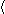
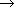

| blank: CHAR | |
Based on chapter 17 in The Way of Z.
Links to more Z examples.
This page looks best when this and this X are about the same size: X. See these viewing tips.
Here we model a word counting utility, and formatting operations such as filling paragraphs.
We begin by defining a set of characters. A text is just a sequence of characters. Certain characters are blanks. Spaces, line breaks, and tabs are certainly blanks, but we might also choose to include punctuation marks and other special characters. In fact, we define a word to be a sequence of non-blank characters, so a blank is any character that might separate two words. A space is a sequence of blank characters.
| [CHAR] |
| blank: CHAR | |
| TEXT == seq CHAR |
| SPACE == seq1 blank |
| WORD == seq1 (CHAR \ blank) |
TEXT includes the empty sequence, but SPACE and WORD must have at least one character, so we declare them to be seq1 (non-empty sequences).
Our word counting and formatting utilities are based on a function called words. The words function returns the sequence of all the words in a text. For example,
| words  H,o,w, ,a,r,e, ,y,o,u,? |
Clearly words is a total function from a TEXT to a sequence of WORD. To define words, we consider all possible patterns of words and spaces, and write an equation for each.
| words: TEXT  seq WORD | ||
| s: SPACE; w: WORD; l,r: TEXT | ||
As you can see, there really aren't so many patterns. When the text is empty, the result is an empty. When the text is nothing but space, the result is empty too. When the text is a single word, the result is a sequence that contains just that word. When the text begins or ends with a space, you can strip it off; the result is the same. Wherever the interior of the text contains a space, you can discard the space and break the text in two. That's it.
This example illustrates several Z techniques that can make definitions
shorter and clearer than code. The function is applied to patterns
like l  s
s  r that reveal the internal structure of their arguments.
If you think in terms of code that has to work its way through the text from
beginning to end, you can't use patterns in this way. The definition is
recursive: the function being defined can appear on both sides of an
equation. (The definition is not circular: by repeatedly applying the
equations to any text, we will eventually arrive at the simple cases.)
Finally, the last equation is nondeterministic: it doesn't tell us
where to begin breaking between words; any space is as good as another. We
don't need to assume that the text will be scanned in order from beginning
to end.
r that reveal the internal structure of their arguments.
If you think in terms of code that has to work its way through the text from
beginning to end, you can't use patterns in this way. The definition is
recursive: the function being defined can appear on both sides of an
equation. (The definition is not circular: by repeatedly applying the
equations to any text, we will eventually arrive at the simple cases.)
Finally, the last equation is nondeterministic: it doesn't tell us
where to begin breaking between words; any space is as good as another. We
don't need to assume that the text will be scanned in order from beginning
to end.
The definition might seem obvious, but it includes cases that are often forgotten. Published programs that purport to fill paragraphs break down when presented with an empty file, or a text that ends with a series of blank lines. The errors are not just coding bugs; they reveal a failure to understand the problem fully. Writing formal definitions encourages us to think carefully about all the cases. We don't have to complain, as some programmers do, that there are so many possibilities we can't consider them all.
The number of words in text t is simply # (words t). We can define a function similar to words that breaks a text into lines. We consider a line break to be a special blank character named nl (for new line).
| lines: TEXT seq LINE | ||
| ... definition omitted ... | ||
Now we have everything we need to write a formal specification for the Unix word counting utility wc. This popular utility is actually a function whose argument is a file name, and whose result is a tuple whose components are the number of lines, words and characters in the file. A typical application looks like this:
% wc structure.tex
110 559 4509
Here is the definition of wc:
| wc: TEXT ( | ||
| file: TEXT | ||
Or, if you like to be more terse
| wc == ( |
Almost any text editor provides a fill operation. The fill operation transforms raggedy-looking text with lines of different lengths into nicely formatted text with lines nearly the same length.
For example, you can type in something that looks like this:
Almost any text editor provides a fill
operation. The fill operation transforms raggedy-looking text
with lines of
different lengths into nicely formatted text with lines
nearly the same length.
and then you can use the fill operation to turn it into this:
Almost any text editor provides a fill operation. The
fill operation transforms raggedy-looking text with lines of
different lengths into nicely formatted text with lines
nearly the same length.
Let's define the fill operation in Z. We observe that fill is just one example of a format operation that changes the appearance of a text by breaking lines in different places, and expanding or contracting the spaces between words, subject to the constraint that no line exceeds the page width. Moreover, a format operation must not change the content of the text: it preserves the same words in their original order.
| width: | |
 |
Format | ||
| t,t': TEXT | |||
| words t' = words t | |||
| l: ran (lines t') # l | |||
The fill operation is a format operation that satisfies an additional constraint: the lines should be filled as much as possible. There are many different ways to express this, and each one results in a slightly different appearance to the text. Perhaps the simplest rule is to require that the filled text occupy the fewest possible lines.
|
Fill | ||
| Format | |||
| # (lines t') = min { t': TEXT | Format # (lines t') } | |||
This definition says that Fill is essentially a minimization operation: it is the specialization of Format that minimizes the number of lines. The schema is a little tricky because Format is used in two different ways and different occurrences of t' represent different things. The t' on the left of the equal sign is the final state of Fill. The t' inside the set comprehension is different: it is a bound variable that ranges over all final states of Format that can be reached from the initial state of Fill. Inside the set comprehension, Format is used as a predicate. The t in this Format is free: it is the initial state of the enclosing schema Fill.
Fill is nondeterministic. There are usually many different ways to place line breaks and spaces that achieve the same minimal number of lines. In specifications, nondeterminism is usually a good thing. We should only ask for what we really want. Nondeterministic definitions are often shorter and clearer because they can omit unimportant details. When we come to implementation, they give us the freedom to make choices that can increase efficiency or convenience. Moreover, nondeterministic definitions enable us to build up specifications by a process of increasing specialization. Just as Fill is a specialization of Format, we can define specializations of Fill to achieve different effects such as justified right margins or minimal spaces between words. Z was designed to support this style of definition by specialization. It makes the formal texts easy to understand and enables us to reuse general definitions.
Back to top
E-mail: jon@u.washington.edu